01Mellah
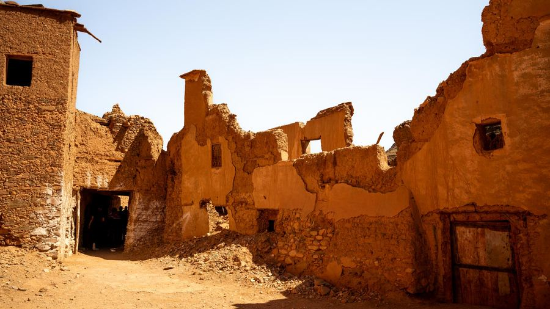
MellahMaghrebMellah24 photosSee the album → 02Wagag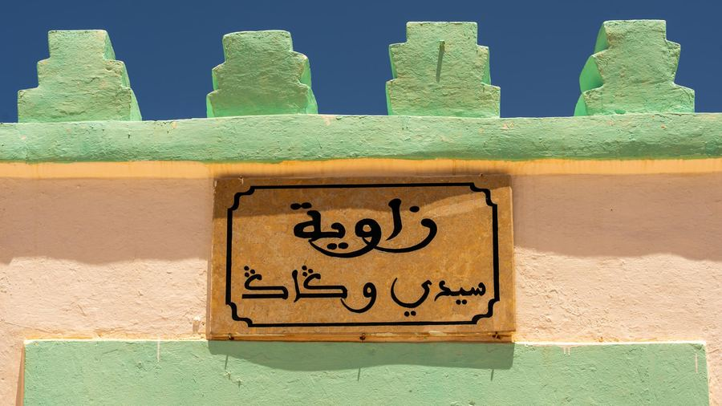
WagagMaghrebWagag15 photosSee the album → 03Saadien Sugar Factory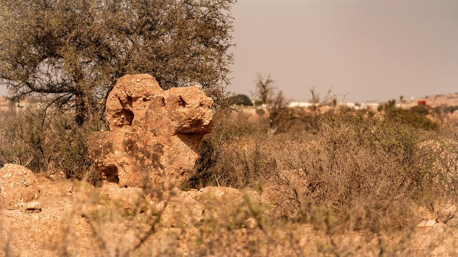
Saadien Sugar FactoryMaghrebSaadien Sugar Factory27 photosSee the album → 04Cheikhat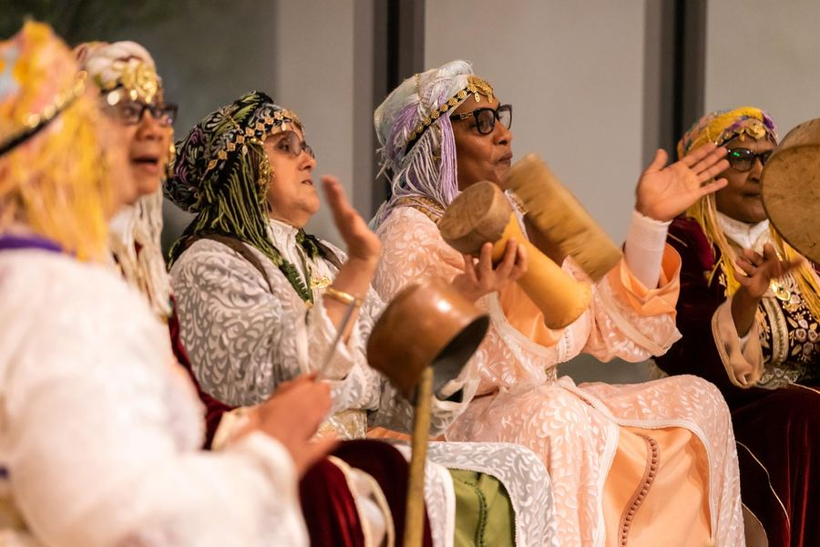
CheikhatMaghrebCheikhat16 photosSee the album → 05Sahara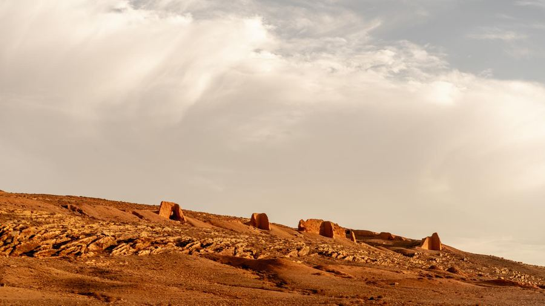
SaharaMaghrebSahara109 photosSee the album → 06Semara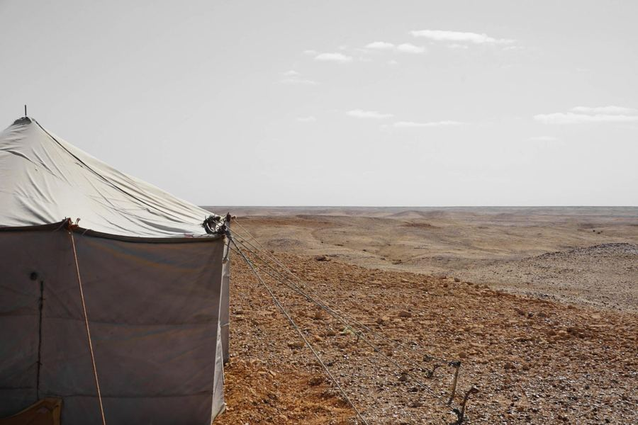
SemaraMaghrebSemara25 photosSee the album → 07Ben Youssef Spirit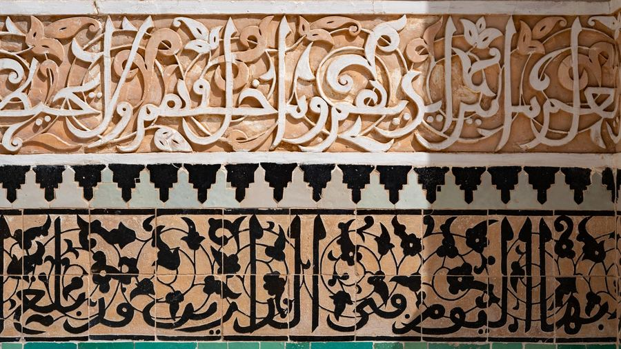
Ben Youssef SpiritMaghrebBen Youssef Spirit22 photosSee the album → 08Marrakesh 2024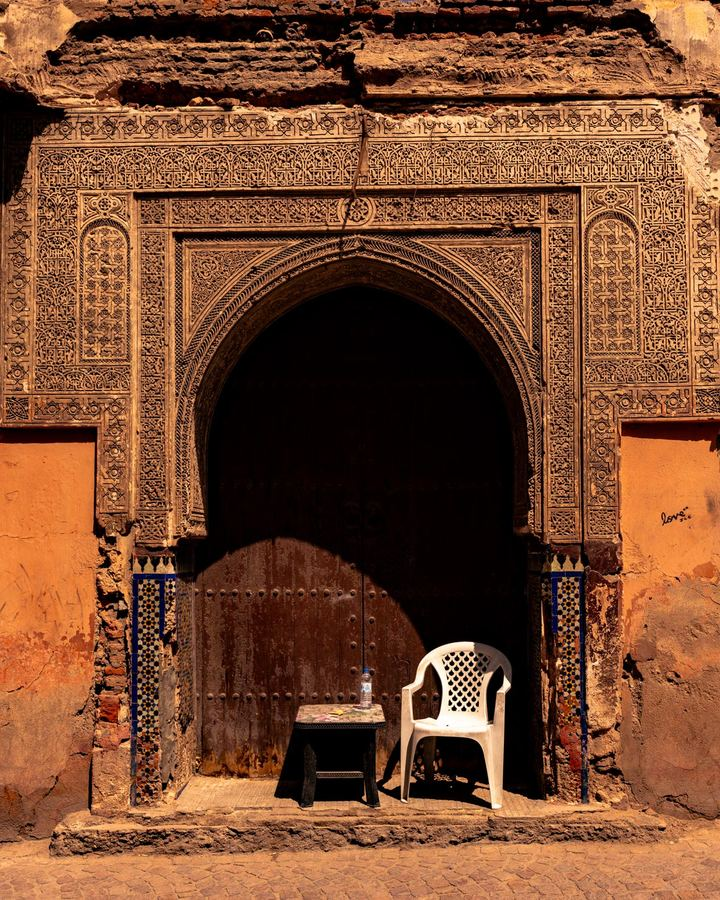
Marrakesh 2024MaghrebMarrakesh 20244 photosSee the album → 09Menara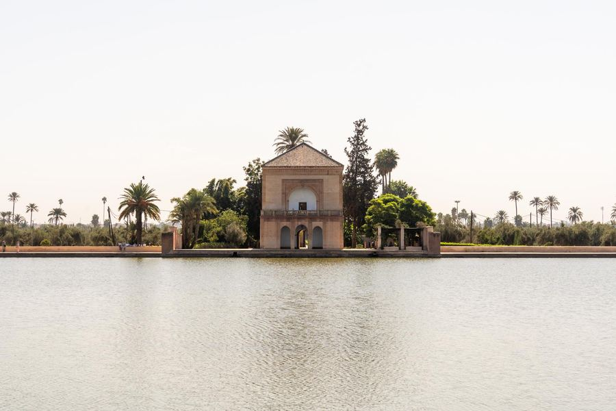
MenaraMaghrebMenara17 photosSee the album → 10Rabat - Chellah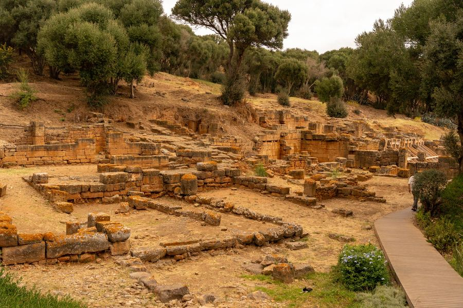
Rabat - ChellahMaghrebRabat - Chellah56 photosSee the album → 11Izem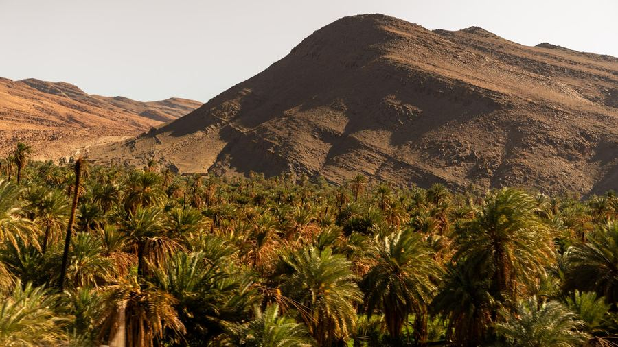
IzemMaghrebIzem40 photosSee the album → 12Fes 2025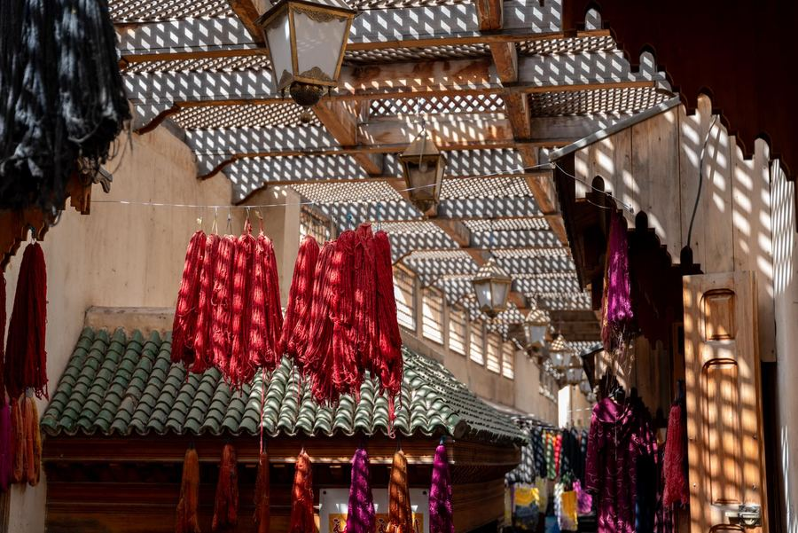
Fes 2025MaghrebFes 202544 photosSee the album → 13Andalusia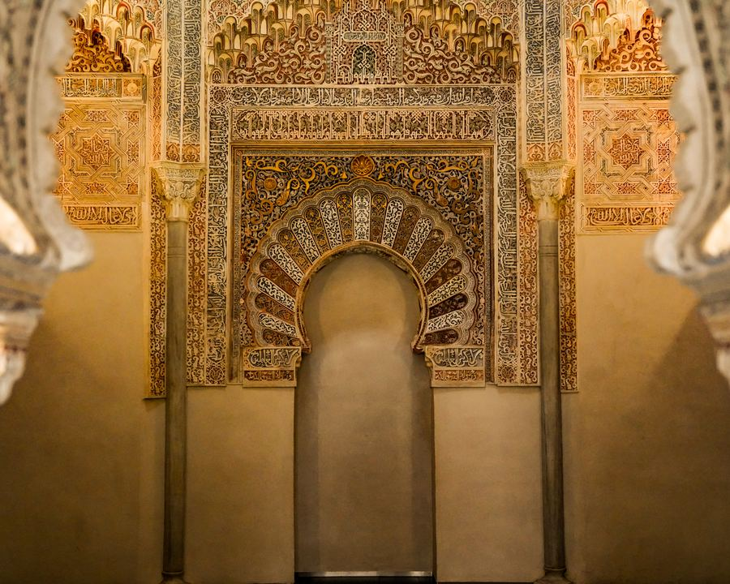
AndalusiaMaghrebAndalusia37 photosSee the album → 14Boudhour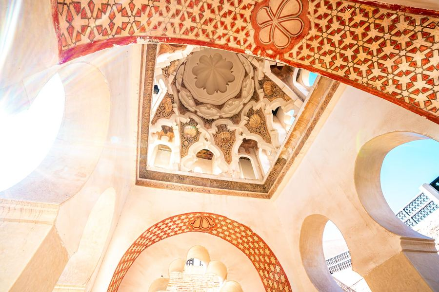
BoudhourMaghrebBoudhour50 photosSee the album → 15Mogador Walk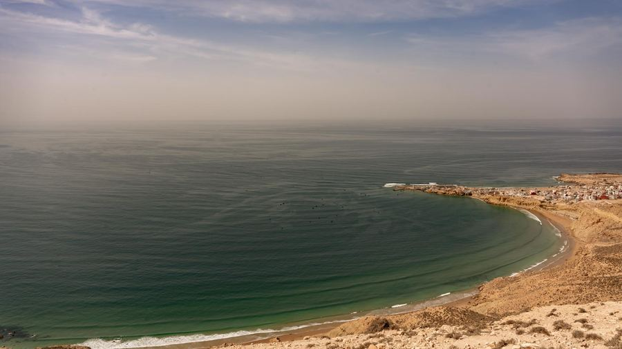
Mogador WalkMaghrebMogador Walk15 photosSee the album →